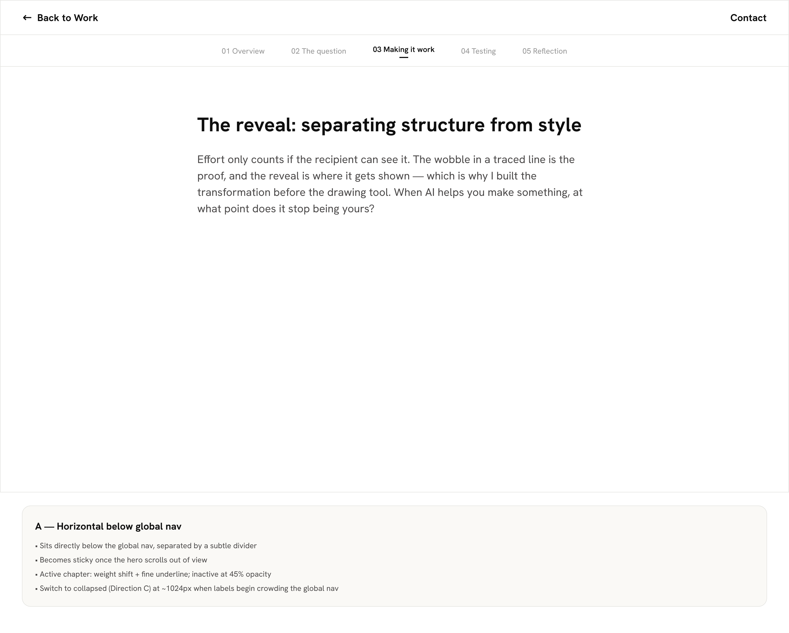
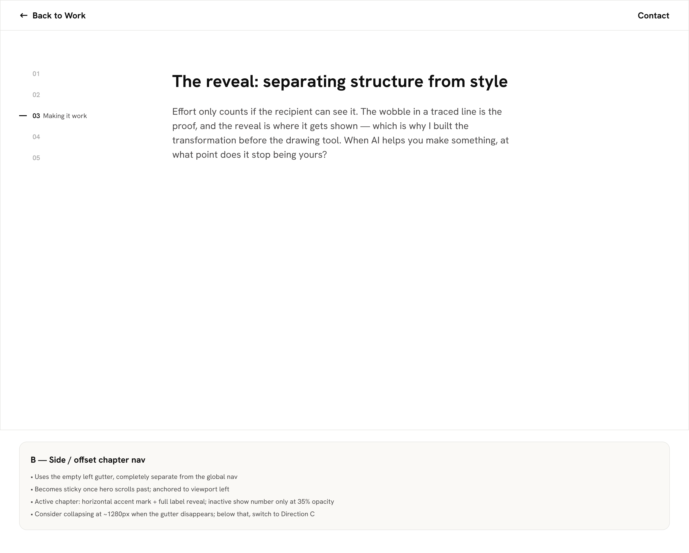
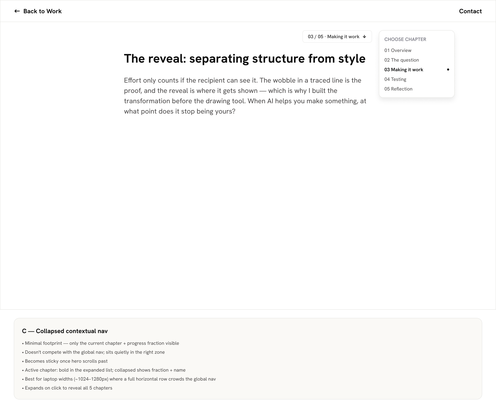
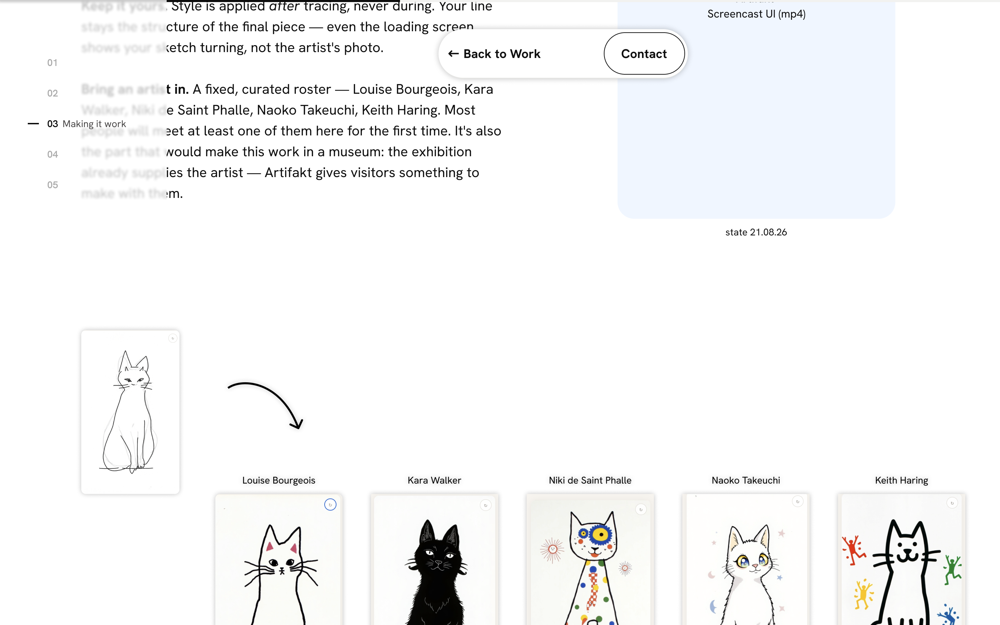
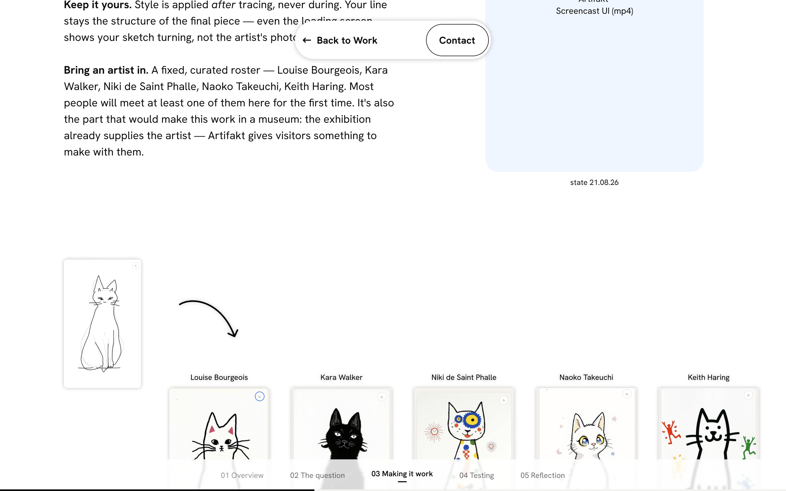
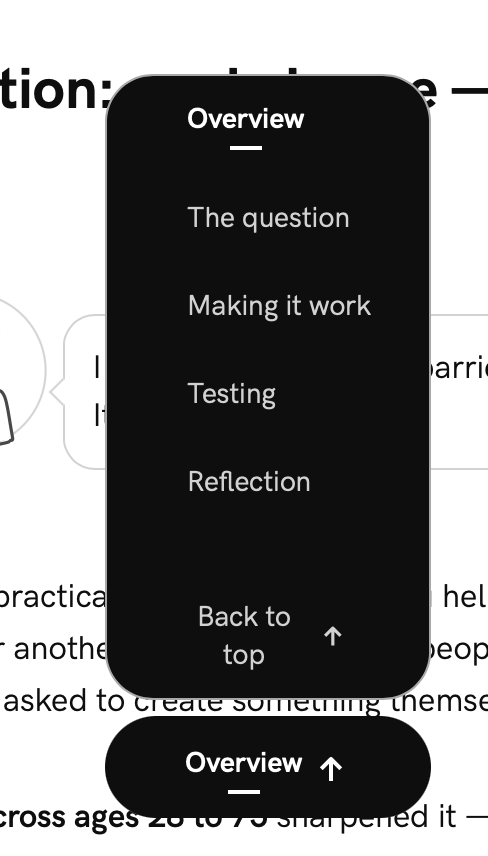
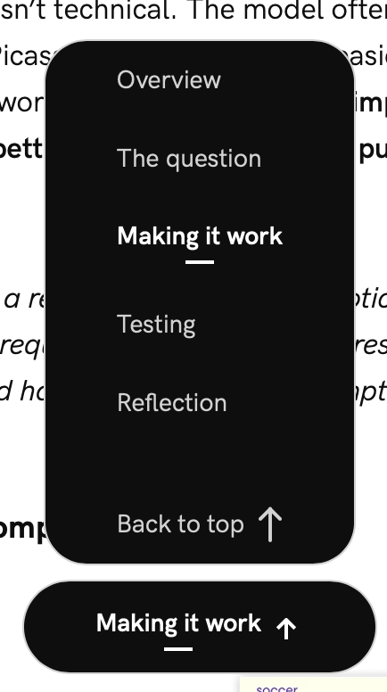
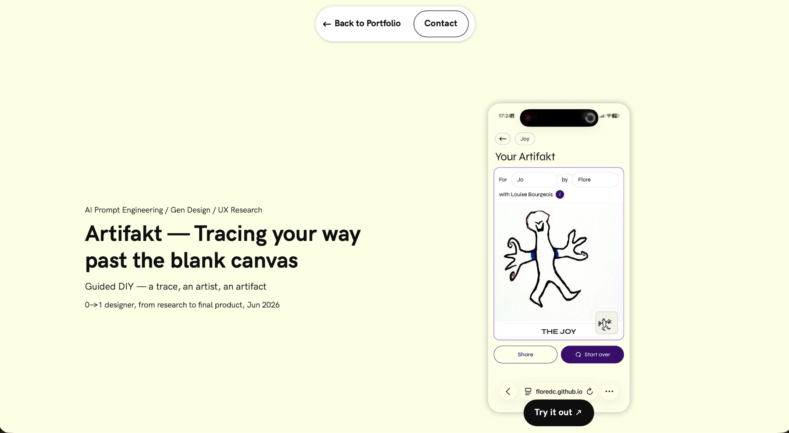
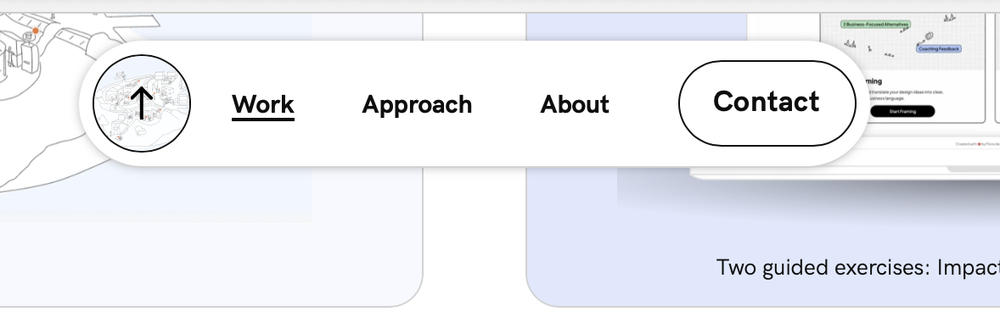

Giving the Artifakt case study a way to orient yourself in it — a thin progress line and a floating chapter navigator — without introducing a second navigation that competes with the global one. Three directions explored in Figma, then built, then reshaped repeatedly by looking at it.
Sessions: 28 Aug – 30 Aug 2026
The problem: Artifakt is long enough to lose your place in, but it already has a global nav, and a second persistent navigation risks reading as a competing one. Three placements were drawn against the real page content, each annotated with its own sticky behaviour, active-state treatment and collapse point.



A and B were both dropped onto a real screen of the case study rather than judged as isolated components — which is what settled it.


The nav and progress line themselves took maybe a third of the session. The rest went on things that only became visible because there was now something on screen to look at — the hero's vertical balance, the global navbar's sizing, a silent anchor-scroll bug, and the fact that only one of ten project pages had a real contact section. That ratio is the honest headline.
scroll-margin-top: clamp(120px, 22svh, 240px) on the anchors, and the scrollspy reads it with getComputedStyle().scrollMarginTop — already resolved to pixels, clamp and svh gone. One place decides the landing; the "which chapter counts as current" line follows it. Two numbers restating the same intent is how they end up disagreeing after someone edits one."Make the menu the same size as the chapter bar" was solved by tying the menu's width to the trigger. That made them equal — and equal to whichever chapter you happened to be reading.


/#project-<slug> — so that project's map popover CTA is dead before you touch it.pt ≈ the nav pill's bottom edge + pb

Five design edits arrived mid-session — invert the nav, add chevrons, change the padding, resize mobile, add an accent token. Each meant a re-pull, and the re-pulls kept surfacing the same class of problem. This is the part that transfers to the next project.
| What happened | Why it bit | What to do next time |
|---|---|---|
| Detached layers don't follow a component swap | After inverting the chapter nav, the collapsed trigger's active underline still bound Colors/Text/text-primary — a black rule on a black pill, invisible. The expanded menu's active label was also still 14px where every sibling had moved to 16. |
After inverting or restyling a component, check the layers that were detached or overridden — they're the ones that silently keep the old binding. Both were caught by reading the export, not by looking at the frame. |
| A value with no variable can't be carried across | The menu's rim was a raw #a8a8a8 and the progress track a raw #f2f2f0 — neither matches any primitive, so there was nothing to reference and no honest name to give them. |
If a colour is meant to persist, name it in the file. An unnamed hex arrives in code as either a hardcoded literal or a wrong-but-close token. |
| An unpublished token can't be read by name | The new accent was added as a semantic variable but isn't in a published library and no node binds it yet — so the hex was readable and the name wasn't. It's carried under a placeholder name pending confirmation. | Publish variables to a library, or apply the token to at least one node, before asking for it to be used. The value alone doesn't tell code what to call it. |
| Fixed widths are a mechanism, not a spec | The desktop capsule was drawn at a fixed 586px. Our type is fluid (14→16px), so 586 would pin the button right while the labels shrank away from it. | Extract what the fixed width buys — here, 60px of air between two groups — rather than the number. Figma later restated it as an explicit gap-32, which confirmed it. |
| Exports carry preview artefacts and off-system icons | The Lottie eye shipped with an opaque white 800×800 backdrop layer. Separately, ic-arrow-up was the only icon painted pure #000000 on stroke rather than #0E0E0E on fill — so alone in the set it couldn't follow its container's colour, and was invisible on the dark pill. |
Turn preview backdrops off before exporting. Re-exporting the arrow from the same component as the rest of the set deleted a build-config workaround entirely. |
scaleX rather than width, so it composites instead of laying out the page on every scroll frame.vite build succeeded — but the dev server serves it raw, where it exports nothing. Silent failure, clean production build. Worth remembering that "it builds" and "it runs" are different claims.| Thing | State | Note |
|---|---|---|
| Chapter nav + progress line | working | Verified at 402 / 768 / 1440 / 1728. Inverted, chevrons, 250px mobile, back-to-top. |
| Hero spacing, navbar sizes, contact sections | working | All ten subpages: 70px navbar everywhere, a contact block on each. |
| Anchor scrolling | working | One shared helper; repeat clicks work now. |
| Eye animation on the pass cards | working | 0.6× speed, cropped viewBox, lazy-loaded. |
| Process-doc card borders | needs work | Hand-edited across 6 generated files — reverts on any re-export. The two rules are recorded in that folder's README. |
| Eye on the process pages | deferred | Would mean a player inside six generated documents. A separate decision. |
| The old violet as text | open | Borders moved to #321366; the previous purple still appears as text in 17 places in the process docs. |